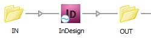
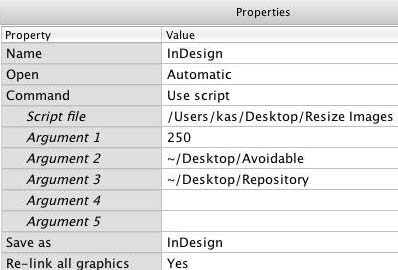

Resize images for Power Switch
Script for Power Switch 9, InDesign and Photoshop CS3-5.
Recently I was asked to rework my Resize Images script so as it could be used in Enfocus Power Switch. To be more precise, to make a totally new script to be attached to an InDesign configurator in a flow.

Power Switch is a very interesting and great tool that allows to rise automation to much higher levels (unfortunately, not many scripters know about its huge potential). However writing a script for using in it's flow is quite a tricky business: it differs significantly from writing a conventional script for InDesign. Sample scripts I found on Enfocus site are quite primitive and description on writing scripts is scarce — I had to spend several days experimenting with Switch to figure out how it works. Actually, Switch takes your script and adds some stuff of its own to it. Moreover you have to handle all possible problems since the script should run without user interaction. But the result is worth of the spent time — a big step in automation. The whole thing works in a similar way as the Adobe Distiller´s hot folder feature does: you just drop a dozen of InDesign packages full of pictures into the “In” folder and in a few minutes you get documents with resized pictures in the “Out” folder.
This is a custom made script created according to specific requirements of my client so I don't think you would use it as it is in your workflow. I post the script with two purposes:
- It may serve as an example for programmers which want to write their own scripts for Switch
- You may find that you need something similar — adjust this script to your needs or write a new script using this approach — in this case feel free to make a request to me by e-mail.
Here is a short description of how it works:
Create a blank flow, add an InDesign element to it. Add two Folder elements: In and Out — for convenience you may create these folders on the desktop — and connect them to the InDesign element.
Download the script from here and attach it to the InDesign configurator. Use the settings below. Create two folders on the desktop: Avoidable and Repository, or leave Argument 2 and 3 blank — these are optional parameters.

Switch allows you to use up to five arguments that are passed to the script, they are sent as plain strings. In the script you can address them as $arg1, $arg2 and so on.
In this script:
Argument 1 is Low Resolution Threshold — images with lower resolution will be renamed by adding _LowRes_ + Effective Ppi value, for example: Sample.tif to Sample_LowRes72.tif
Argument 2 is the path (or a list of paths separated by comma) to the folders in which images should not be resized — e.g. logos, ads, etc. If the name of an image InDesign document coincides with an image in this folder(s), the image will be relinked to it.
Argument 3 is the path to the folder with color-corrected and retouched images with _fix suffix. If an image with the same base name and the _fix suffix exist in the folder, the image will be relinked to it. The idea is if the image is already color-corrected, don´t resize it but relink to the ready one.
Activate the flow by clicking the green triangle. Now you can put one or more InDesign files into the In folder. You can also throw the whole package(s) together with links and fonts into the In folder, the Switch temporarily attaches these fonts, processes the package by script and finally moves it to the Out folder.
For missing and low resolution images the script creates red circles on a locked, non-printing layer.
The script can be used as a stand alone one for developing and testing in InDesign — you just have to comment out the relative lines at the beginning of the script (see comments). Lines 2-3, 9-14, 19-46 are used for Switch; 51-58 and 98 for InDesign.
Here are a few short tips that might be useful:
- Don´t confuse Javascript/AppleScript for CS applications with Internal scripting in PowerSwitch (scripts written in SwitchScripter). You need the former: the script attached to an InDesign, Photoshop, Illustrator, Acrobat, Quark, etc configurator. You drop a configurator into the flow, attach In and Out folders and a script to it.
- Attach the script to Command property. Don't use Open and Save in the script — Switch handles them on its own (Open and Save as parameters)
- Use $doc in the script instead of activeDocument
- You can debug a script running in Switch by using $.writeln() and $.bc()
Click here to download the script.
Here are two more samples of scripts for Power Switch: Rename Layers in Photoshop and Relink Images and Apply “Rich Black” Color.